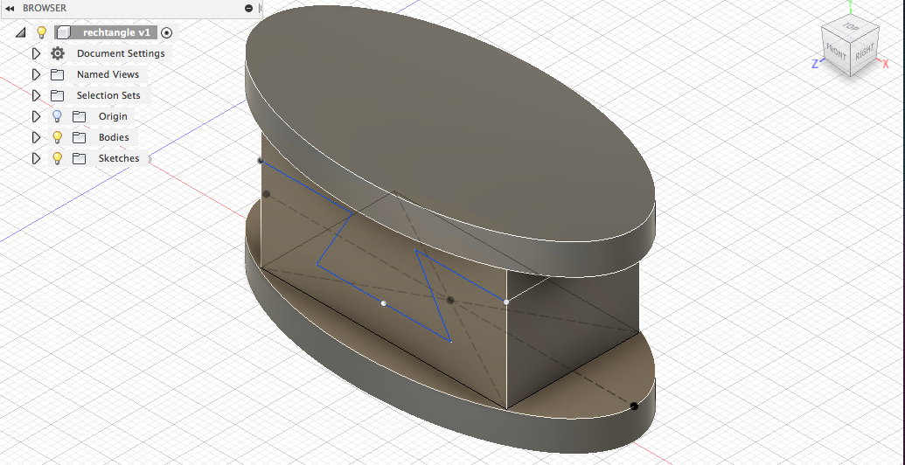
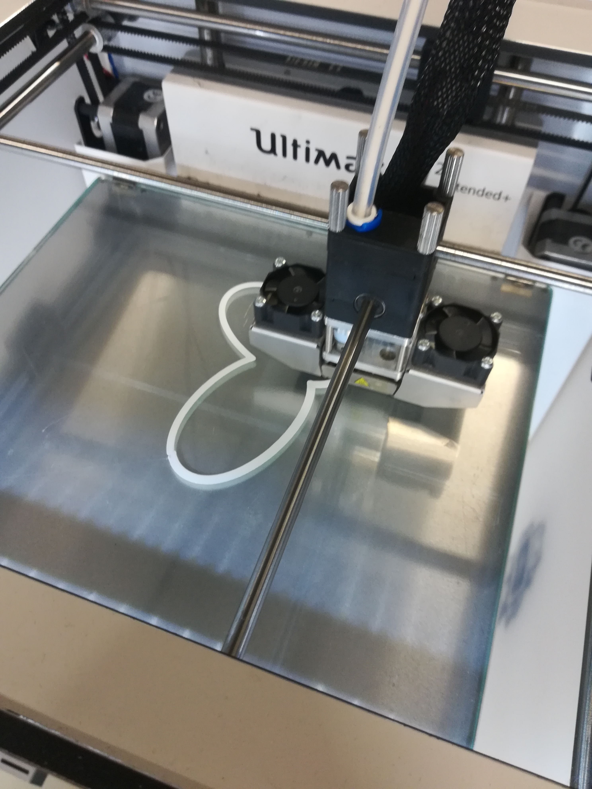
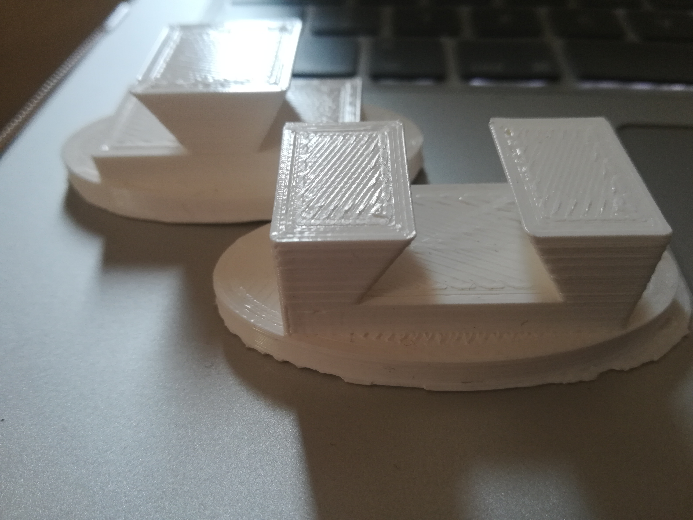

The task was to create individual joints with any kind of form which can be used for ceratin purposes in further processes of our sessions. My finished joint looks like this:
The first step is to create an ellipse. Creating an ellipse defined by a center point, major axis and a point on the ellipse. Then selecting the center point of it, selecting the second point to define the first axis and in the end selecting the third point to define a point on the ellipse. Finally can be extruded:

By creating lines and arcs the next step can be made. The user has to select a start and endpoint to define a line segmwnt. By clicking and draging the endpoint of a segment an arc is defined. It has to be extruded again.

Now the opposite site has to be created. By using the mirrow effect.

The last step is to create an ellipse again and to extrude it as done in the previous one.

During the lecture in the third week the usage of 3D printers was introduced to us. After some instruction we could directly print out our joints. In order to use the printers first of all our sketches have to be insrted in another program and optimized there so it is optimal for printing with the 3D printers. Here is visible how such printers look like and the beginning phase of printing:
In the end my final joint looks like this as a 3D print:
